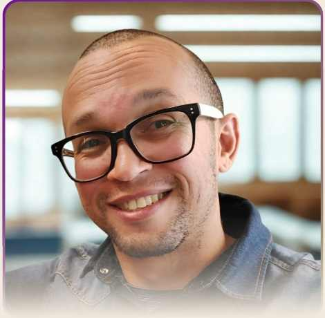

INSPIRA LIVROTERAPIA
É a metodologia que dá sentido ao caminho: leitura mediada, curadoria, trilhas, práticas de presença, encontros e vínculo ao longo do ciclo de cuidado.
✦Uma jornada de leitura mediada que ajuda você a transformar livros em pausas, reflexões e práticas possíveis — com conteúdos guiados, encontros e uma comunidade que respeita o seu ritmo.

Um itinerário de cuidado que começa na leitura e continua na vida.
O INSPIRA LIVROTERAPIA reúne curadoria literária, leitura mediada, conteúdos psicoeducativos, mindfulness e encontros em grupo em uma experiência acessível e progressiva.
A proposta não é “ler mais” por obrigação. É criar um encontro mais atento com aquilo que você lê — e perceber como uma ideia, uma história ou uma pergunta pode atravessar o cotidiano de forma prática e humana.
Você não precisa acompanhar tudo, nem estar “em dia”. O conteúdo fica disponível para que a jornada se adapte à vida real.
O INSPIRA conduz a experiência. A Alma Cuidada organiza o ambiente digital onde boa parte dessa jornada acontece.

É a metodologia que dá sentido ao caminho: leitura mediada, curadoria, trilhas, práticas de presença, encontros e vínculo ao longo do ciclo de cuidado.
✦É o ambiente digital em que você encontra conteúdos, áudios, vídeos, livros narrados, práticas, materiais reflexivos e as trilhas que acompanham a experiência.
◌Mais do que acesso, você recebe cuidado contínuo, direção terapêutica e uma comunidade que caminha com você.
Você recebe leituras, áudios, práticas e materiais selecionados com intencionalidade para apoiar seu processo de cuidado e reflexão.
Participe de uma jornada acompanhada, com trocas significativas, encontros e a sensação de não caminhar sozinha(o).
A experiência foi pensada para caber na vida real: sem pressão, sem atraso e com liberdade para avançar no seu próprio ritmo.
Menos promessa abstrata. Mais experiência concreta: conteúdos organizados para ler, escutar, assistir e praticar no tempo que você tem.
Passe pelas imagens para conhecer exemplos de leituras, práticas e experiências disponíveis no ecossistema.
Alguns exemplos de conteúdos e experiências disponíveis na Plataforma Alma Cuidada que ajudam a tornar o INSPIRA mais concreto.
Conteúdo mediado para aprofundar ideias e conectá-las à vida cotidiana.
Pequenos movimentos de presença para caber na rotina real.
Uma experiência para compreender como leitura, reflexão e cuidado podem se encontrar.
Prática guiada para desacelerar e cultivar atenção com delicadeza.
O catálogo é dinâmico e pode receber atualizações ao longo dos ciclos.
Tudo organizado para que reflexão possa virar prática — sem exigir que você consuma tudo ao mesmo tempo.
Livros e conteúdos selecionados para diferentes momentos.
Análises e conteúdos por capítulos para aprofundar leituras.
Narrativas que tornam a experiência mais acessível.
Ansiedade, estresse, burnout, TDAH e outros temas.
Práticas guiadas de presença, pausa e autorregulação.
Roteiros e recursos digitais para aplicar aprendizados.
Ao vivo e gravado, com reflexão e partilha mediada.
Atualizações semanais dentro da Plataforma Alma Cuidada.
Às vezes, começa com uma pausa, uma pergunta ou uma página que nos ajuda a olhar para algo de outro jeito.
O INSPIRA é uma iniciativa de psicoeducação e promoção do cuidado emocional. Não substitui psicoterapia, diagnóstico, tratamento médico ou atendimento de urgência.
Mensal, semestral ou anual, com checkout seguro.
Entre na Plataforma Alma Cuidada com login individual.
Leia, escute, assista e pratique no seu ritmo.
Receba o calendário e participe dos encontros mediados.

O grupo organiza calendário, temas e encontros, além de oferecer pequenos incentivos para a continuidade da jornada.

O encontro mensal cria um espaço mediado para conversar sobre a obra do ciclo, refletir e compartilhar experiências com respeito.
Quando o projeto alcançar e mantiver 50 assinantes ativos, está prevista a realização de um encontro presencial por mês em Piracicaba, sujeito à confirmação de agenda e espaço.
modelo oficial desta prévia do INSPIRA
No modelo 5 + 1, cinco acessos pagos ajudam a viabilizar uma gratuidade para ampliar o acesso de pessoas em contexto de vulnerabilidade emocional.
A mesma lógica pode ser ampliada em parcerias com empresas e organizações por meio de acessos em lote e Planos Sementes.

Nem todo cuidado começa em uma resposta. Às vezes, começa em uma história que nos ajuda a reconhecer algo que ainda não sabíamos nomear.
O INSPIRA nasceu da união entre educação, escuta, leitura e cuidado humano. Minha intenção é mediar essa experiência com profundidade, sem transformar desenvolvimento pessoal em pressão por desempenho.
Quero que cada pessoa encontre aqui um ritmo possível — uma forma de ler, refletir e se perceber com mais presença.
Relatos da Comunidade Alma Cuidada, apresentados aqui em linguagem adaptada para Português-Brasil.
“Eu sempre gostei de ler, mas o ritmo do dia a dia me fazia abandonar os livros. A organização e os áudios me ajudaram a retomar esse hábito no meu próprio ritmo.”
Relato da comunidade“Eu buscava desenvolvimento pessoal de um jeito fundamentado e prático. A curadoria trata os temas com sobriedade e leva a reflexões muito profundas sobre o cotidiano.”
Relato da comunidade“Os encontros ao vivo são muito especiais. Perceber outras pessoas compartilhando experiências tão humanas cria uma sensação real de pertencimento e respeito.”
Relato da comunidadeNenhuma nota média ou quantidade de avaliações é exibida nesta prévia sem uma fonte verificável.
Todos os planos oferecem acesso completo à plataforma, conteúdos atualizados, comunidade e curadoria especializada.
Ideal para experimentar e viver a dinâmica da comunidade de forma livre.
Uma jornada contínua e aprofundada de seis meses.
Para quem assume um compromisso firme com o próprio equilíbrio ao longo do ano.
Garantia incondicional de 7 dias. Se você considerar que a curadoria não é para você, poderá solicitar a devolução do valor investido conforme as condições da compra.
No plano mensal, o cancelamento pode ser solicitado sem fidelização. Nos planos semestral e anual, as condições promocionais se aplicam ao período contratado, com possibilidade de cancelar a renovação automática.
Já sou assinante: acessar a plataforma →Se você considerar que a experiência não é para você, poderá solicitar a devolução do valor dentro do prazo de garantia, conforme as condições da compra.
Não é psicoterapia, diagnóstico, tratamento médico ou atendimento de urgência. É uma proposta de psicoeducação e promoção do cuidado emocional por meio da leitura mediada e de práticas integrativas.
Não. O projeto promove psicoeducação e cuidado emocional por meio da leitura mediada e de práticas integrativas. Não substitui psicoterapia, diagnóstico, tratamento médico ou atendimento de urgência.
Não necessariamente. A plataforma oferece resumos, conteúdos em áudio e vídeo, roteiros digitais e livros narrados. Quando uma obra externa for recomendada, a aquisição é opcional.
O grupo comunica calendário, temas e encontros. É um espaço coletivo, moderado e voltado ao pertencimento e à partilha respeitosa, sem atendimento clínico individual.
Há previsão de um encontro online mensal, ao vivo e com gravação disponível. A data de cada ciclo é comunicada aos assinantes.
Quando o projeto alcançar e mantiver 50 assinantes ativos, está prevista a realização de um encontro presencial mensal, sujeito à confirmação de agenda, local e demais condições operacionais.
Sim. Há possibilidades de acessos em lote, campanhas internas, apoio a beneficiários sociais, modelo 5 + 1, Planos Sementes e apresentação personalizada.
O B2B ganha um caminho próprio: acessos para colaboradores, ações de participação, impacto social e apresentação personalizada — sem competir com a jornada individual na página principal.
Conheça a experiência, escolha o ciclo que combina com o seu momento e caminhe no seu ritmo.